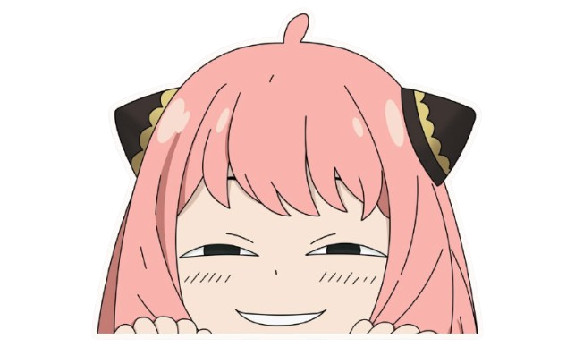

GAME INFO (✯◡✯)
Welcome nakama !! Thanks for choosing to play this mini game (≧◡≦)
Instructions for playing this game are really simple. This game comprises of 5 rounds, each round you will have to select any of the rock,paper and scissors by clicking their designated buttons in the "you" section. After all 5 rounds are completed you will be automatically redirected to a webpage depending if you won,lost or the match resulted in draw, from there you can choose to restart the game and play it again or just yk admire my theming and give me a star on github ehehe ٩(◕‿◕｡)۶ (am just kiding lol).
A little bit on why I named this mini-project "Janken-pon" instead of rock-paper-scissors right away, its simple thats what rock-paper-scissors are called in Japan. Although their way of playing this game is quite different but still their are some similarities you can learn more about it from here if you are interested. Lol I started to yap (￣▽￣*)ゞ, anyways....
Thanks for wasting your time here, if you are willing to play click the button below. Enjoy 。.:☆*:･'(*⌒―⌒*)))
